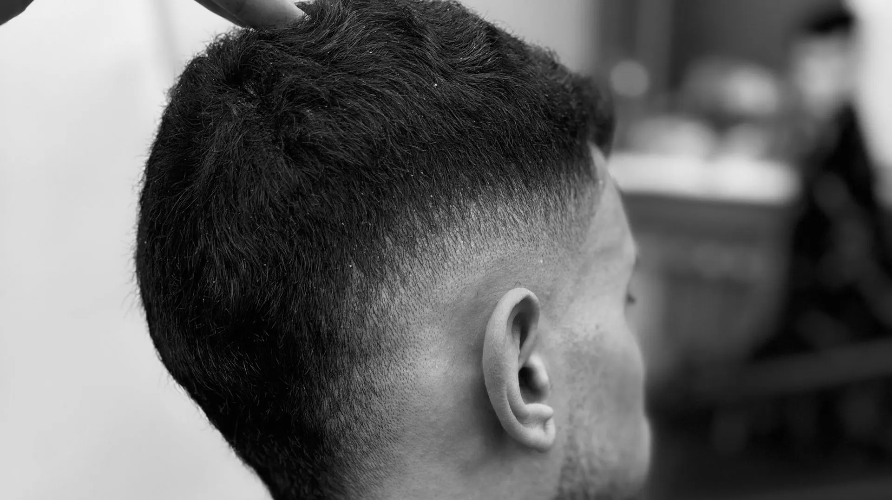
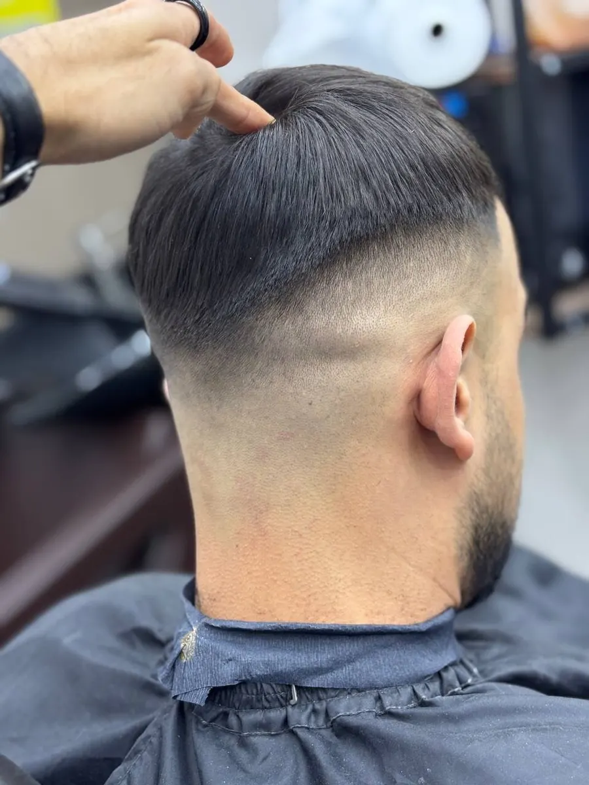
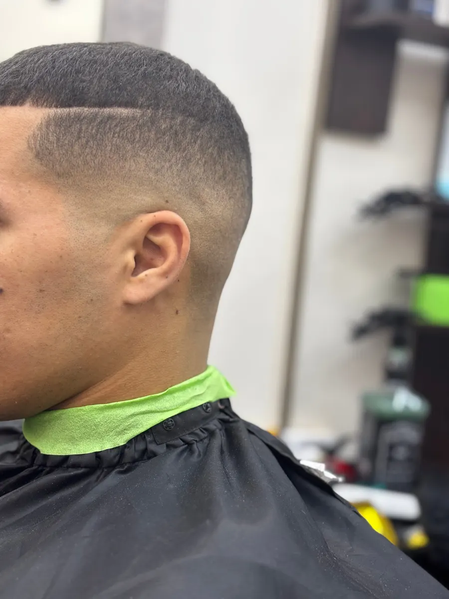
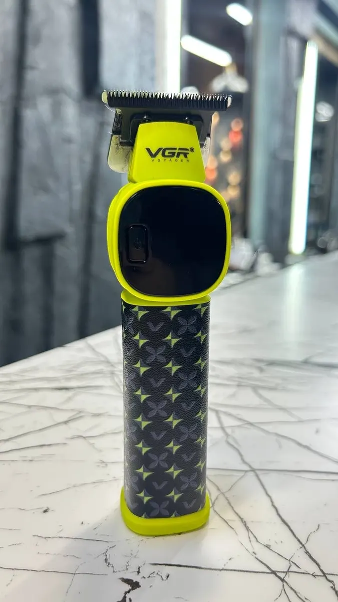

Барбершоп · Пермь, улица Ленина
Барбершоп на Ленина, 45 в Перми: стрижка и борода у мастера Абдулмалика
Гости пишут, что мастер поможет подобрать стрижку, даже если вы не знаете, какую хотите. Работаем со вторника по воскресенье с 11:00 до 24:00.
- Индивидуальный подход к каждому гостю
- Вход доступен на инвалидной коляске
- Подарки, скидки и бонусы по акциям

Цены
Прайс на карточке «Аль шейх» в Яндекс.Картах не указан. Цену называют при записи.
Стрижки и борода
- Мужская стрижкауточнить
- Оформление бородыуточнить
Как записаться
Пишете в Telegram
Назовите услугу и удобное время.
Подтверждаем время
Отвечаем, свободно ли окно, и закрепляем его за вами.
Приходите на Ленина, 45
Четвёртый этаж.
Стрижка и совет мастера
Мастер объясняет, что и как делает, и подсказывает по уходу.



Что гости отмечают в отзывах
Помогает выбрать стрижку
Даже если вы не знаете, что хотите, мастер подскажет интересный вариант.
Индивидуальный подход
Гость пишет, что сюда приходят не только подстричься, но и отдохнуть.
Работает аккуратно и красиво
Гости отмечают, что мастер чувствует, чего хочет клиент.
Люди любят свою работу
Так пишет один из гостей об атмосфере в салоне.
Отзывы с Яндекс.Карт
«Аль шейх это лучший барбершоп в Перми где я был. Стригся у Абдул Малик. Мастер своего дела! Все идеально сделает, объяснит, подскажет! Обязательно буду приходить снова и снова, так же буду советовать данный Барбер всем своим знакомым. Заходя в Аль шейх попадаешь в то место, где люди любят свою работу и любят то что они делают.»
Инкогнито 6861 · 26 августа 2025
«Если вам нужна качественная стрижка и приятный сервис то вам определённо сюда. Абдулмалек хороший мастер проверенный временем с хорошим вкусом и даже если вы не знаете какую стрижку хотите он всегда поможет подобрать что-то интересное!»
данил назыров · 8 августа 2025
«Самый лучший барбер шоп в Перми! Подход к каждому клиенту индивидуальный. Приходишь туда не только подстричься, но ещё и отдохнуть. С уверенностью могу советовать вам его, приходите не пожалеете)»
Кирилл Черенев · 5 сентября 2025
Отзывы с карточки на Яндекс.Картах.
Частые вопросы
Как записаться?
Напишите в Telegram @Al59Sheikh или позвоните +7 (919) 498-72-24: назовите услугу и время.
Где вы находитесь?
Пермь, улица Ленина, 45, 4 этаж.
В какие дни работаете?
Со вторника по воскресенье с 11:00 до 24:00, с перерывом с 12:00 до 13:00. Понедельник выходной.
Сколько стоит стрижка?
Прайса на карточке нет, цену называют при записи.
Можно ли попасть на коляске?
Да, на карточке указано, что вход доступен.
Напишите, на какое время записать
- Адрес
- Пермь, улица Ленина, 45, 4 этаж, Пермь
- Часы
- Вт–вс 11:00–00:00, пн выходной
- Телефон
- +7 (919) 498-72-24